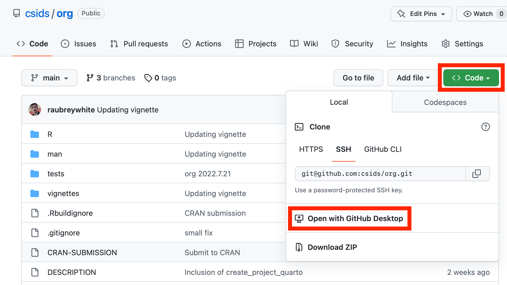

Note
This section will assume that you are using GitHub as your remote Git server. There are other options (e.g. GitLab, self-hosted Gogs, etc) and they will all operate similarly.
3.1 Create an Account
You will need an account on your remote Git server.
Do this https://github.com/join.
If your team has a GitHub Organization
You will need to provide your team’s administrator with your GitHub username so that they can add you to their GitHub Organization.
3.2 GitHub Desktop
3.2.1 Initial Setup
3.2.2 Cloning a repository

3.2.3 How to push commits to GitHub
- https://docs.github.com/en/desktop/contributing-and-collaborating-using-github-desktop/making-changes-in-a-branch/pushing-changes-to-github
- (You can ignore step 3, “Create Pull Request”, because we are only working on the ‘main’ branch)
3.2.4 How to pull updates from GitHub:
- https://docs.github.com/en/desktop/contributing-and-collaborating-using-github-desktop/keeping-your-local-repository-in-sync-with-github/syncing-your-branch#pulling-to-your-local-branch-from-the-remote
- (Remember that we are only using the ‘main’ branch)